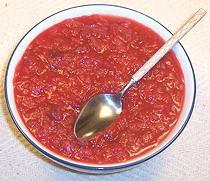

 |
Cranberry SauceNorth America | ||||
| Serves: Effort: Sched: DoAhead: |
many ** 30 min Yes |
This flavorful cranberry sauce is healthier than the standard recipe which starts out "1 cup of sugar" (or even more). You will probably want some sweetener but you can choose which. You'll never want canned cranberry sauce again. | |||
|
12 1 1/2 1 1/4 1/2 tt |
oz c in t t c |
Cranberries fresh Orange Juice fresh Ginger fresh Orange zest Cinnamon ground Pineapple Sweetener (1) |
Make: - (30 min)
|